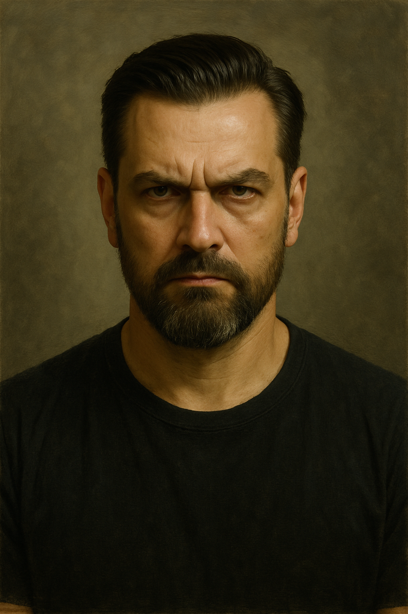

Petr Kramný – Nevinný muž, nebo chladnokrevný vrah?

Petr Kramný – Nevinný muž, nebo chladnokrevný vrah?
V létě roku 2013 otřásl Českou republikou případ, který se stal jedním z nejkontroverznějších trestních řízení v novodobé historii země. Petr Kramný byl obviněn a následně odsouzen za vraždu své manželky Moniky a dcery Kláry během rodinné dovolené v egyptské Hurghadě. Ačkoliv české soudy rozhodly, mnoho právních expertů, veřejnosti i část médií dodnes zpochybňuje celý průběh vyšetřování, důkazní břemeno i samotný rozsudek. Jde o justiční omyl, nebo byl Petr Kramný skutečně pachatelem jednoho z nejchladnokrevnějších činů vůbec?
Rodinná dovolená, která se proměnila v tragédii
Petr, Monika a desetiletá Klára odcestovali na přelomu července 2013 do Egypta, konkrétně do letoviska Hurghada. Zpočátku nic nenasvědčovalo tragédii. Rodina působila navenek normálně – koupání, výlety, fotografie z hotelu. Avšak ráno 30. července byly Monika a Klára nalezeny mrtvé v hotelovém pokoji. Petr údajně zavolal na recepci s tím, že obě ženy nereagují. Místní úřady zprvu uvedly jako pravděpodobnou příčinu otravu jídlem či vodou – častý problém v této oblasti.
Smrt matky a dcery vyvolala okamžitě velký zájem médií a veřejnosti. Zatímco Kramný čekal v Egyptě na vyřešení situace a převoz těl, už tehdy se objevily první pochybnosti a otázky. Proč přežil jen on? Proč nebyly známky otravy u něj? Proč byly ženy nalezeny bez známek boje?
Zvrat po návratu do České republiky
Po převozu těl do Česka následovala pitva, kterou provedli čeští znalci. Výsledkem byl šokující závěr: Monika i Klára zemřely v důsledku zásahu elektrickým proudem. Tento nález obrátil celý případ vzhůru nohama. Z původně tragické nehody se stal možný dvojnásobný úmyslný trestný čin.
Petr Kramný byl v tu chvíli jediným podezřelým. Byl vyslýchán, analyzovalo se jeho chování, výpovědi, a zejména psychologické profily. V lednu 2014 byl zatčen a vzat do vazby. Obvinění znělo: úmyslná vražda obou blízkých osob.
Co říkaly důkazy?
Podle státního zastupitelství měl Petr Kramný způsobit smrt žen pomocí elektrického proudu z hotelové zásuvky. Měl použít kabel od nabíječky či jiného zařízení, který přiložil ke koupajícím se tělům. Motivem měla být frustrace ze vztahu s Monikou a obava z rozvodu a ztráty dcery. Důkazy však byly převážně nepřímé.
- Žádné otisky prstů na kabelu.
- Žádné svědectví o násilí či hádce.
- Nebyl nalezen přesvědčivý záznam z hotelových kamer.
- Nebyl zajištěn přesný nástroj činu.
- Hotel neumožňoval přístup do zásuvek tak, jak bylo popsáno.
Velkou roli hrály znalecké posudky. Někteří experti, jako MUDr. Dvořák, později vyjádřili vážné výhrady – např. že stopy po elektrickém zásahu nebyly typické a že šlo o nepřímé závěry. Přesto soudy přijaly verzi, že šlo o dvojnásobnou vraždu pomocí elektřiny.
Soudní proces: Emocionální a rozdělující
Soudní proces začal v roce 2015 a přitahoval mimořádnou mediální pozornost. Kramný se hájil, že je nevinný. Jeho vystupování bylo klidné, až chladné, což někteří považovali za známku cynismu. Jiní psychologové varovali, že lidé reagují na šok různě – od hysterického pláče po úplné emoční stažení.
V lednu 2016 padl rozsudek: 28 let vězení. Soudce odůvodnil trest jako odpovídající brutalitě činu a závažnosti důkazní situace. Odvolací soud verdikt potvrdil.
Právní a odborné pochyby
Případ ale vzbudil řadu právních a znaleckých otázek. Nešlo totiž o přímý důkaz (např. nahrávku, svědka, DNA), ale o soubor indicíí. Zpochybněny byly i znalecké posudky – někteří znalci nebyli soudem vůbec vyslyšeni. Právníci jako Klára Long Slámová (obhájkyně) kritizovali, že nebyl dán prostor alternativním scénářům, například technické závadě v hotelu.
Snaha o obnovu procesu
Obhajoba i nadále podávala návrhy na obnovu řízení – naposledy v roce 2023. Vždy bez úspěchu. Soudy označily nově předkládané důkazy za nedostatečné nebo irelevantní. Podle kritiků ale celý systém selhává v tom, že není ochoten sebereflexe – jakmile je jednou rozsudek pravomocný, je obnova mimořádně obtížná.
Alternativní teorie
Někteří experti i část veřejnosti spekuluje, že smrt žen mohla být způsobena technickou poruchou v hotelu – například vadným fénem, klimatizací nebo chybnou elektroinstalací. Egypt nikdy nevedl vyšetřování jako vraždu a oficiálně nikdy Petra Kramného neobvinil. Těla byla balzamována a částečně znehodnocena pro další pitvu.
Role médií a veřejného mínění
Média hrála v celém případu mimořádnou roli. Od prvních dnů vytvářela obraz Kramného jako "ledově klidného vraha", přičemž psychologická interpretace jeho výrazu byla brána téměř jako důkaz. Veřejnost byla rozdělena. Část společnosti věřila v jeho vinu, jiná poukazovala na nedostatek přímých důkazů.
Závěr – Máme jistotu?
Případ Petra Kramného není jen otázkou viny či neviny. Je to příběh o důkazech, pochybnostech, lidské psychologii, práci znalců, justici a mediálním tlaku. Je to otázka, zda v civilizované společnosti lze někoho poslat na téměř tři desetiletí do vězení bez přímého důkazu, pouze na základě komplexní mozaiky nepřímých indicií.
V právním státě by měla platit zásada in dubio pro reo – v pochybnostech ve prospěch obviněného. V případě Kramného zůstává otázka: byly pochybnosti dostatečně vyvráceny?
Je skutečně vinen, nebo se česká justice dopustila jednoho z největších omylů novodobé historie?